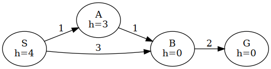
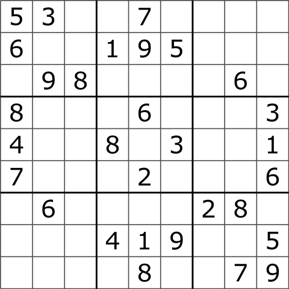
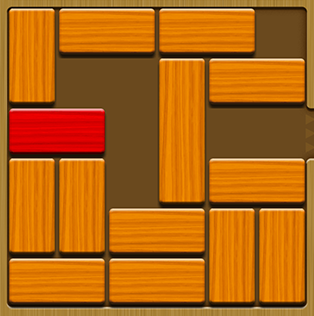
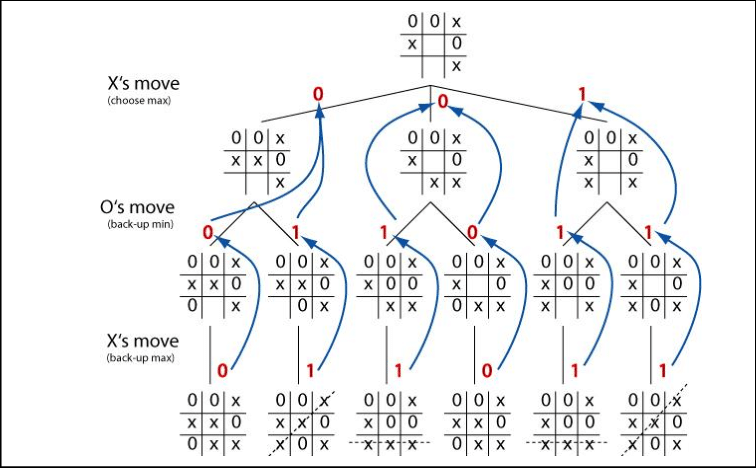

Created: 2021-09-09 Thu 14:25
Many interesting problems can be framed as Search problem in a Graph.
| Game | Mode | Knowledge | Determinism | Time horizon |
|---|---|---|---|---|
| Maze | Cooperative | Total | Deterministic | Unbounded |
| Sokoban | Cooperative | Total | Deterministic | Unbounded |
| Time-trial Racing | Cooperative | Total | Deterministic | Real-time |
| Freecell | Cooperative | Partial | Non-Deterministic | Unbounded |
| Game | Mode | Knowledge | Determinism | Time horizon |
|---|---|---|---|---|
| Racing | Adversarial | Total | Deterministic | Real-time |
| Chess | Adversarial | Total | Deterministic | Real-time |
| Among Us | Adversarial | Partial | Deterministic* | Real-time |
| CS:GO | Adversarial | Partial | Deterministic* | Real-time |
| Liar's Dice | Adversarial | Partial | Non-Deterministic | Real-time |
| Uno | Adversarial | Partial | Non-Deterministic | Real-time |
We will need some common terms to talk about path-finding.
class that represents the state.
def generic_search_sketch(g: Graph, starting_node, goal_function) -> Solution:
Closed = set() # Closed: Explored nodes (We only store the state)
Open = MagicalCollection() # Open: Known, but still unexplored Nodes
Open.add(starting_node)
while Open:
node = Open.pop() # Takes a node from Open. Which one?
if is_goal(node):
return path(node)
Closed.add(node)
for n in node.neighbors(): # Creates Nodes around node.state
if n.state in Closed:
continue
Open.upsert(n) # Insert|Update to keep Nodes a Spanning Tree (if needed)
return None
def _dfs(g: Graph, state: State, q: Query, p: Path) -> Path:
"""Naive-DFS. Might get stuck in a loop."""
if q.isGoal(state):
return p
for s in g.neighbors(state):
path = _dfs(g, s, q, p+s)
if path:
return path
return None
def dfs(g: Graph, s: State, q: Query):
return _dfs(g, s, q, Path())
def _loop_free_dfs(g: Graph, state: State, q: Query, p: Path, visited: Set[State]) -> Path:
"""Simple-DFS. Checks for loops, but it might run into a Stack Overflow."""
if q.isGoal(state):
return g.path_to(state) # Retrieve the path to state
if state in visited
return None
visited.add(state)
for a, s in g.neighbors(state):
path = _loop_free_dfs(g, s, q, p+a)
if path:
return path
return None
def loop_free_dfs(g: Graph, s: State, q: Query) -> Path:
return _loop_free_dfs(g, s, q, Path(), set())
def loop_free_recursion_free_dfs(g: Graph, start: State, q: Query, p: Path) -> Path:
"""DFS with loop detection and no recursion. Now a Generic Search using a Stack."""
Closed = set()
Open = Stack()
Open.push(start)
g.reach(start, action=None, parent=None)
while not Open.empty():
state = Open.pop()
if q.isGoal(state):
return g.path_to(state) # Retrieve the path to state
for a, s in s.neighbors():
if s in Closed:
continue
g.reach(s, action=a, parent=state) # Update the path to s (if needed)
Open.push(s)
return None
def breadth_first_search(g: Graph, start: State, query: Query) -> Path:
"""BFS. A Generic Search using a Queue."""
Closed = set()
Open = Queue()
Open.push(start)
g.reach(start, action=None, parent=None)
while not Open.empty():
state = Open.pop()
if q.isGoal(state):
return g.path_to(state) # Retrieve the path to state
for s in state.neighbors():
if s in Closed or s in Open:
continue
g.reach(s, action=a, parent=state) # Record the path to s (if needed)
Open.push(s)
return None
The natural starting point is BFS as it's optimal in the number of actions.
Costs will force us to continuously rank and update nodes in \(Open\). We will need something more efficient than a list or a stack.
What should we do here?
def best_first_search(g: Graph, start: State, query: Query) -> Path:
"""Dijkstra's algorithm. Similar to BFS, but prefering lower costs."""
Closed = set()
Open = CustomPriorityQueue() # A Heap with fast updates for existing items
Open.push(Node(start))
while not Open.empty():
node = Open.pop()
if q.isGoal(node.state):
return node.get_path()
for a, s in state.neighbors():
if s in Closed:
continue
n = Node(s, action=a, parent=state)
Open.update_if_better(n) # Open may already have a Node for s
return None
With a known cost to a Node, and an estimated remaining cost to reach a goal, we can guess what's the cost of a solution that goes the Node.
\(A^*\) is the search algorithm that ranks nodes with \(f(n)=g(n)+h(n.state)\).

| 🧍 | # | # | 🏁 | ||
| # | # | ||||
| # | |||||
| # | # | ||||
| # | # | ||||
| 1 | 2 | 3 |
| 4 | 5 | 8 |
| 7 | 6 |
| 🧍 | 🧱 | ☐ | |||
| 🧱 | 🧱 | 🧱 | |||
| 🧱 | 🧱 | ☐ | |||
| 🧱 | 🧱 | ||||
| 🧱 | 📦 | 📦 | |||


def generic_search_sketch(g: Graph, starting_node, goal_function, limit) -> Solution:
Closed = set() # Closed: Explored nodes (We only store the state)
Open = MagicalCollection() # Open: Known, but still unexplored Nodes
Open.add(starting_node)
while Open:
node = Open.pop() # Takes a node from Open. Which one?
if node.cost > limit:
continue
if is_goal(node):
return path(node)
Closed.add(node)
for n in node.neighbors(): # Creates Nodes around node.state
if n.state in Closed:
continue
Open.upsert(n) # Insert|Update to keep Nodes a Spanning Tree (if needed)
return None
def generic_search_sketch(g: Graph, starting_node, goal_function) -> Solution:
limit = 1
while True:
sol = generic_search(g, starting_node, goal_function, limit)
if sol is not None:
return sol
limit += # ???
| G | ||||||||
| # | # | # | # | # | # | # | ||
| # | # | |||||||
| # | # | |||||||
| # | # | |||||||
| # | # | |||||||
| # | # | |||||||
| # | # | |||||||
| # | S | # | ||||||
| G | ||||||||
| # | # | # | # | # | # | # | ||
| # | - | X | x | X | - | # | ||
| # | - | - | - | - | - | # | ||
| # | - | - | - | - | - | # | ||
| # | - | - | - | # | ||||
| # | - | # | ||||||
| # | - | # | ||||||
| # | S | # | ||||||
| G | ||||||||
| # | # | # | # | # | # | # | ||
| # | s | # | ||||||
| # | # | |||||||
| # | # | |||||||
| # | # | |||||||
| # | # | |||||||
| # | # | |||||||
| # | # | |||||||
| G | ||||||||
| # | # | # | # | # | # | # | ||
| # | - | - | s | - | - | # | ||
| # | - | - | - | - | - | # | ||
| # | - | - | - | - | - | # | ||
| # | X | - | - | - | X | # | ||
| # | x | X | - | X | x | # | ||
| # | x | X | x | # | ||||
| # | x | # | ||||||
| G | ||||||||
| # | # | # | # | # | # | # | ||
| # | # | |||||||
| # | # | |||||||
| # | # | |||||||
| # | # | |||||||
| # | # | |||||||
| # | # | |||||||
| # | S | # | ||||||

def minimax(state: State) -> (Action, Score):
"""Selects the action with the best worst-case.
If our (only) opponent plays perfectly, we maximize our value.
"""
best_action = None
best_value = float("-inf")
for (a, s) in state.neighbors():
state_value = min_value(s)
if state_value > best_value:
best_value = state_value
best_action = a
return (best_action, best_value)
def max_value(state: State) -> Score:
"""The best outcome we can get."""
if problem.is_terminal(state):
return problem.linearized_utility(state)
best_value = float("-inf")
for (a, s) in state.neighbors():
best_value = max(best_value, min_value(s))
return best_value
def min_value(state: State) -> Score:
"""The worst outcome we may face."""
if problem.is_terminal(state):
return problem.linearized_utility(state)
worst_value = float("inf")
for (a, s) in state.neighbors():
worst_value = min(worst_value, max_value(s))
return worst_value
def alpha_beta_pruning(state: State) -> (Action, Score):
"""Selects the action with the best worst-case.
If our (only) opponent plays perfectly, we maximize our value.
s: The state to analyse
a: The value of our best move.
b: The value of our opponent's worst move.
"""
best_action = None
best_value = float("-inf")
for (a, s) in state.neighbors():
state_value = max_value(s,
alpha=float("-inf"), # We lose
beta=float("inf")) # They lose
if state_value > best_value:
best_value = state_value
best_action = a
return (best_action, best_value)
def max_value(state: State, alpha: Score, beta: Score) -> Score:
"""The best outcome we can get."""
if problem.is_terminal(state):
return problem.linearized_utility(state)
best_value = float("-inf")
for (a, s) in state.neighbors():
best_value = max(best_value, min_value(s, alpha_beta))
if best_value >= beta: # Our opponent already has a better move
return best_value
alpha = max(alpha, best_value)
return best_value
def min_value(state: State, alpha: Score, beta: Score) -> Score:
"""The worst outcome we may face."""
if problem.is_terminal(state):
return problem.linearized_utility(state)
worst_value = float("inf")
for (a, s) in state.neighbors():
worst_value = min(worst_value, max_value(s, alpha, beta))
if worst_value <= alpha: # We already have a better move
return worst_value
beta = min(beta, worst_value)
return worst_value
In which order do we explore the actions? How do we rank them?
Can we analyze the game beforehand?